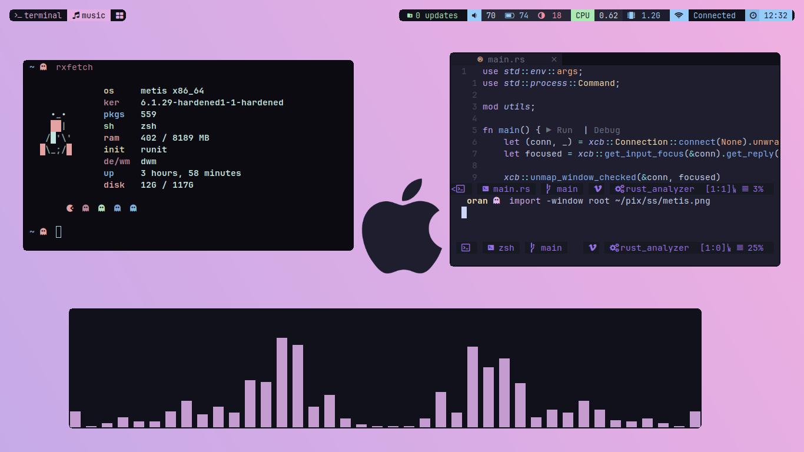
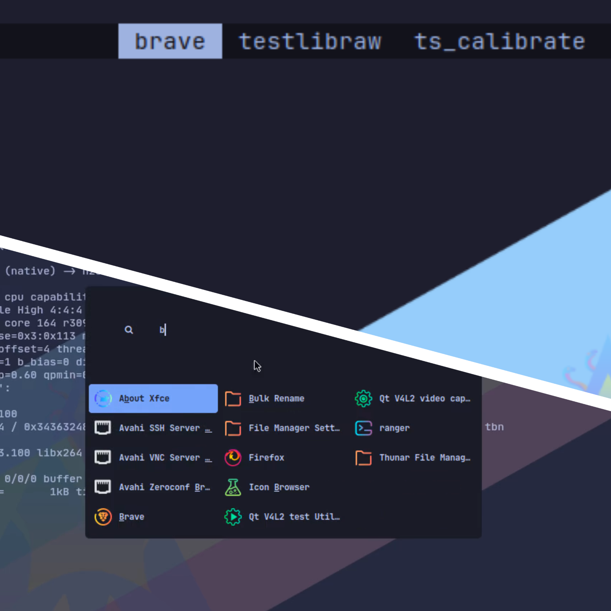
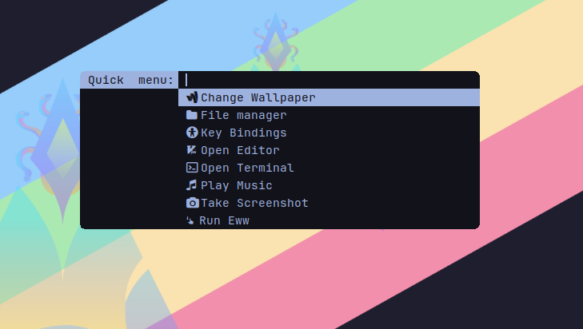
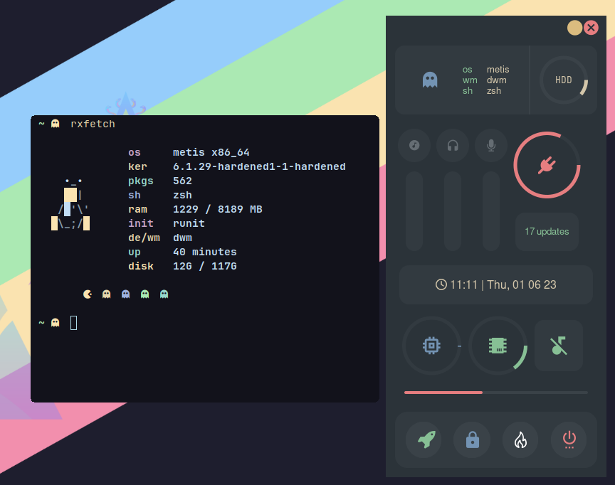
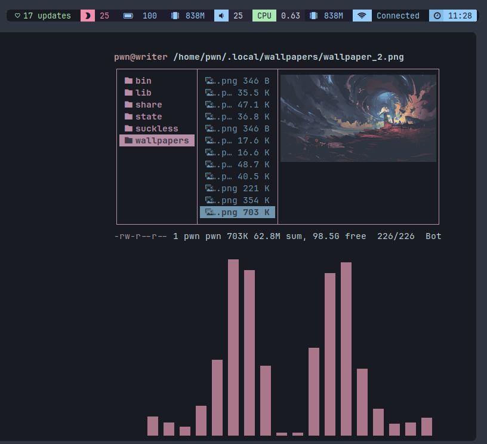

DWM
DWM (Dynamic window manager) is a widely-used tiling window manager that organizes windows in a full binary tree structure, treating them as leaves. It efficiently handles multiple monitors and is customizable through message-based configuration and control. DWM is a viable alternative window manager available in the METIS Linux distribution.

APP LAUNCHER
This is your dwm desktop. It's just a standalone dynamin window manager, So there are no desktop icons, no folders or directories just a clean wallpaper. A statusbar (DWMBAR) on the top, shows your various system information, window modes in dwm and lets you switch between workspaces, control music, volume, brightness, connect to a network, etc.

Menu and Applets
A quickmenu powered by dmenu,lets you run important apps quickly.
Take screenshots using imagemagick Change wallpaper along with colorscheme one the fly.
music Let's you play music, stored in ~/music
Run Eww Run's the beautiful eww app.

Applications
ZSH is the default shell which has vim bindings along with normal one's,
Thunar is the default file manager,
Neovim (Neovide) is the text editor,
Firefox is the web browser,
Suckless's terminal (st) is the terminal emulator and Kitty as alternate terminal in case st doesn't work for you.
There are pre-configured command line applications (neovim, ranger, htop, and many more) installed .

Hardware Keys
Laptop's function keys are fully configured to use.
You can easily control the speaker/headphone volume, Screen brightness.
You can control music playback (default to mpd).
With print key, You can take screenshots of the desktop (with delays), focused window or selected area.

Window Management
- View Keybindings
In dwm, windows can be tiled horizontally and vertically, and they can also be used in floating or full screen mode. Additionally, you can expand, shrink, mark, and lock windows. Furthermore, you have the option to set specific rules for individual applications based on their window's class name.

Keybindings
Here's a list of some important keybinds you need to know for operating dwm easily. If you want to view, modify or add new keybinds, Edit config.def.h file, and rebuild/reinstall the dwm using sudo make clean install
Applications
| Keybind | Action |
|---|---|
W + space |
Open dmenu launcher |
W + c |
Close currently focused client |
W + Return |
Open terminal (st) |
W + grave(~) |
Toggle scratchpad terminal |
W + S + h |
Open quickmenu |
W + S + x |
Open powermenu |
W + S + u |
Open quicklinks |
Menu and Applets
| Keybind | Action |
|---|---|
Window |
Open application launcher |
W + l |
Increase master area |
W + h |
Decrease master area |
W + k |
Change focus to the window lower in stack |
W + j |
Change focus to the window higher in stack |
W + f |
Promote currently selected window to the top of the stack |
W + d |
Decrease master count by one |
W + s |
Increase master count by one |
W + r |
Toggle mouse-resize mode |
Window Management
| Keybind | Action |
|---|---|
W + 1..5 |
Switch to respective workspace |
W + tab |
Switch to previous/next workspace |
W + S + 1..5 |
Move focused window to respective workspace |
W + 0 |
View all tags |
W + S + 0 |
Tag currently focused window to all |
Misc Keys
| Keybind | Action |
|---|---|
W + C + S + q |
Refresh dwm |
W + S + q |
Kill dwm |
W + g |
Hide/Unhide bar |
Hardware Keys
| Keybind | Action |
|---|---|
Print |
Take screenshot of desktop. |
S + Print |
Take screenshot using selection |
XF86AudioRaiseVolume |
Increase Volume |
XF86AudioLowerVolume |
Decrease Volume |
XF86AudioMute |
Toggle Mute Speakers |
XF86AudioMicMute |
Toggle Mute Microphone |
XF86MonBrightnessUp |
Increase Screen Brightness |
XF86MonBrightnessDown |
Decrease Screen Brightness |
Styles / Themes
DWM also has pywal support, which automatically applies a colorscheme based on your wallpaper whenever you change it. To set a random wallpaper, use the command setbg <directoryname>. To change the wallpaper and apply a colorscheme, use the command setbg <imagefile>. If you want to open images in nsxiv, you can use the key combination Ctrl + x + w to change the wallpaper.